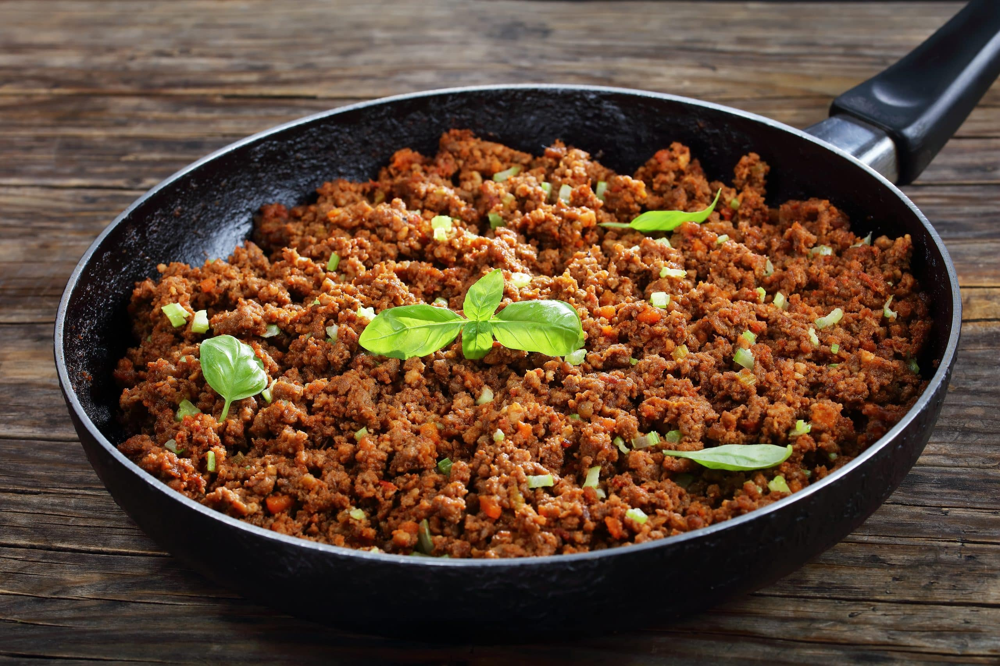

Quantas Gramas de Proteína tem 100gramas de Fíle de Frango

Uma porção de 100g de carne moída (patinho) contém aproximadamente 26g de proteína. A carne moída é uma excelente fonte de proteína completa, ferro heme (altamente absorvível) e vitamina B12. O teor de gordura varia conforme o tipo: patinho (5-10% gordura) tem mais proteína, enquanto carne mais gorda (como acém) tem menos proteína e mais calorias.
Teor proteico por tipo:
- Patinho: 26g proteína / 100g
- Alcatra: 24g proteína / 100g
- Acém: 22g proteína / 100g